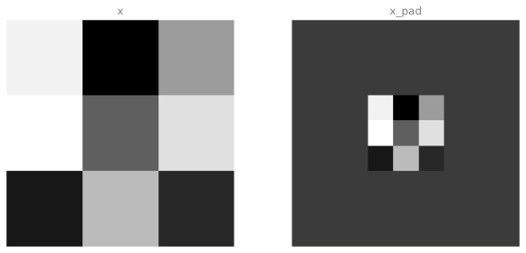
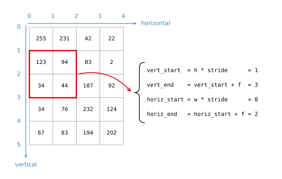

import numpy as np
import matplotlib.pyplot as plt
plt.rcParams['image.interpolation'] = 'nearest'
plt.rcParams['image.cmap'] = 'gray'
np.random.seed(1)Lab: Convolutional Model Step by Step
deep-learning
convolutional-neural-networks
computer-vision
numpy
lab
Implement zero padding, a single convolution step, and the forward and backward passes of the convolution and pooling layers in pure NumPy.
This is the first assignment of Course 4. Everything the previous pages described in words gets written out here as NumPy code. You implement the convolution (CONV) and pooling (POOL) layers, both the forward propagation and, in an optional final part, the backward propagation.
By the end of this lab you will be able to
- explain the convolution operation in terms of array slices,
- apply the two types of pooling operation,
- identify the components used in a convolutional network (padding, stride, filter) and their purpose,
- build every forward block of a convolutional network from scratch.
The notation is the one used throughout the course. Superscript \([l]\) denotes an object of layer \(l\), superscript \((i)\) denotes an object from the \(i\)-th example, and subscript \(i\) denotes the \(i\)-th entry of a vector. The symbols \(n_H\), \(n_W\) and \(n_C\) denote the height, the width and the number of channels of a given layer, and \(n_{H_{prev}}\), \(n_{W_{prev}}\) and \(n_{C_{prev}}\) denote the same three quantities for the previous layer.
Packages
Two imports carry the whole lab. There is no dataset here, and no helper file to download. Every function is exercised on small seeded random arrays, so the numbers printed below are reproducible on any machine.
np.random.seed(1) fixes the random number generator so that every run produces the same arrays. Without it the printed values would change on every run, and the shapes and numbers discussed in the text below would not be the ones you see.
Outline of the Assignment
The lab builds two families of functions. The convolution family covers zero padding, one convolution step, the convolution forward pass, and the convolution backward pass. The pooling family covers the pooling forward pass, the max mask, the value distribution used by average pooling, and the pooling backward pass.
Everything is written from scratch in NumPy with plain for loops. No vectorization, and no deep learning framework. The next lab rebuilds the same network with the TensorFlow equivalents of these functions, which is how you would really write it, but implementing the loops once is what makes the index bookkeeping stop being mysterious.
One structural detail runs through the whole lab. For every forward function there is a corresponding backward function, so at every step of the forward pass some values are stored in a cache. The backward pass reads that cache to compute gradients. This is exactly the pattern from the deep neural network lab in Course 1, applied now to volumes instead of vectors.
Zero Padding
Zero padding adds a border of zeros around the height and the width of an image, as described on the padding section. It has two benefits worth restating.
It allows a CONV layer to be used without shrinking the height and width of the volume. That matters for building deep networks, because otherwise the height and width would shrink at every layer until nothing is left. The important special case is the same convolution, in which the height and width are preserved exactly.
It also keeps more of the information at the border of the image. Without padding, very few values in the next layer are affected by the pixels at the edges, so the edges are effectively discounted.
The function to implement pads a whole batch of \(m\) images at once. The input X has shape \((m, n_H, n_W, n_C)\) and the output has shape \((m, n_H + 2p, n_W + 2p, n_C)\). Only the two middle axes get padded. The batch axis and the channel axis are left alone, because padding an image does not add images to the batch and does not add colors to a pixel.
np.pad takes one pair of numbers per axis, saying how much to add before and after along that axis. Passing (0, 0) for the first and last axes and (pad, pad) for the two middle ones is the whole implementation. mode='constant' with constant_values=(0, 0) says the added entries are zeros rather than copies or reflections of the edge.
def zero_pad(X, pad):
"""
Pad with zeros all images of the dataset X. The padding is applied to the
height and width of an image.
Argument:
X -- numpy array of shape (m, n_H, n_W, n_C) representing a batch of m images
pad -- integer, amount of padding around each image on the vertical and
horizontal dimensions
Returns:
X_pad -- padded image of shape (m, n_H + 2 * pad, n_W + 2 * pad, n_C)
"""
X_pad = np.pad(X, ((0, 0), (pad, pad), (pad, pad), (0, 0)),
mode='constant', constant_values=(0, 0))
return X_padThe check below pads a batch of four 3 by 3 two-channel images with pad = 3, so each image grows to 9 by 9 while the batch still holds four images with two channels each. Printing x[1, 1] next to x_pad[1, 1] shows what happened to one row. The original row of three pixels is still there, now sitting inside a row of nine, surrounded by zeros.
%config InlineBackend.figure_formats = ['svg']
np.random.seed(1)
x = np.random.randn(4, 3, 3, 2)
x_pad = zero_pad(x, 3)
print("x.shape =\n", x.shape)
print("x_pad.shape =\n", x_pad.shape)
print("x[1,1] =\n", x[1, 1])
print("x_pad[1,1] =\n", x_pad[1, 1])
fig, axarr = plt.subplots(1, 2, figsize=(9, 4))
axarr[0].set_title('x', fontsize=12, color='gray')
axarr[0].imshow(x[0, :, :, 0])
axarr[1].set_title('x_pad', fontsize=12, color='gray')
axarr[1].imshow(x_pad[0, :, :, 0])
for ax in axarr:
ax.axis('off')
plt.tight_layout()
plt.show()x.shape =
(4, 3, 3, 2)
x_pad.shape =
(4, 9, 9, 2)
x[1,1] =
[[ 0.90085595 -0.68372786]
[-0.12289023 -0.93576943]
[-0.26788808 0.53035547]]
x_pad[1,1] =
[[0. 0.]
[0. 0.]
[0. 0.]
[0. 0.]
[0. 0.]
[0. 0.]
[0. 0.]
[0. 0.]
[0. 0.]]
The left panel is the first channel of the first image, a 3 by 3 block of random values. The right panel is the same block after padding, a 9 by 9 image with the original 3 by 3 content in the middle and a uniform border around it. That border is entirely zeros. It shows up as mid grey rather than black because imshow maps the smallest value in the array to black and the largest to white, and these values run from negative to positive, so zero lands in the middle of the scale.
Single Step of Convolution
The next function applies the filter at a single position of the input. It is the innermost operation of the convolution, and every loop written later just calls it over and over at different positions.
The step takes a slice of the input with the same shape as the filter, multiplies it element by element with the filter, sums all the resulting numbers, and adds the bias. The result is one real number, one entry of the output volume.
Notice that this is a full 3D operation. The slice a_slice_prev has shape \((f, f, n_{C_{prev}})\) and so does W, so the element-wise product covers every channel of the window at once, and the sum collapses all of it into a single value. This is what the convolutions over volume section described.
The bias b arrives as a NumPy array of shape \((1, 1, 1)\) rather than as a plain number. Adding an array to a NumPy scalar would give back an array, so the bias is squeezed down to a Python float first, which keeps Z a genuine scalar.
NoteCompatibility Note
The original notebook writes Z = Z + float(b). Since NumPy 2.0, calling float() on an array that still has axes raises a TypeError, so this page uses float(np.squeeze(b)), which drops the three length-one axes first. The result is identical.
def conv_single_step(a_slice_prev, W, b):
"""
Apply one filter defined by parameters W on a single slice (a_slice_prev)
of the output activation of the previous layer.
Arguments:
a_slice_prev -- slice of input data of shape (f, f, n_C_prev)
W -- weight parameters contained in a window, of shape (f, f, n_C_prev)
b -- bias parameters contained in a window, of shape (1, 1, 1)
Returns:
Z -- a scalar, the result of convolving the sliding window (W, b) on a
slice x of the input data
"""
# Element-wise product between a_slice_prev and W. Do not add the bias yet.
s = a_slice_prev * W
# Sum over all entries of the volume s.
Z = np.sum(s)
# Add the bias, cast to a scalar so that Z is a scalar too.
Z = Z + float(np.squeeze(b))
return ZRunning it on a random 4 by 4 by 3 window with a random 4 by 4 by 3 filter gives one number.
np.random.seed(1)
a_slice_prev = np.random.randn(4, 4, 3)
W = np.random.randn(4, 4, 3)
b = np.random.randn(1, 1, 1)
Z = conv_single_step(a_slice_prev, W, b)
print("Z =", Z)
print("type(Z) =", type(Z))Z = -6.999089450680221
type(Z) = <class 'numpy.float64'>Two things in that output are worth pausing on. Forty-eight numbers went in, one number came out, so a whole 4 by 4 by 3 window has been collapsed into a single value. That value is a numpy.float64 scalar, not an array of shape \((1, 1, 1)\), which is what makes the assignment Z[i, h, w, c] = conv_single_step(...) in the next function work without complaint.
Convolution Forward Pass
The forward pass takes many filters and convolves each of them over the input. Each filter produces a 2D output, and stacking those outputs along a new axis gives the 3D output volume, exactly as the multiple filters section showed.
The function receives A_prev of shape \((m, n_{H_{prev}}, n_{W_{prev}}, n_{C_{prev}})\), the weights W of shape \((f, f, n_{C_{prev}}, n_C)\), the biases b of shape \((1, 1, 1, n_C)\), and a dictionary hparameters holding the stride and the padding. The output shape follows the formulas already derived for strided convolutions,
\[ n_H = \left\lfloor \frac{n_{H_{prev}} - f + 2p}{s} \right\rfloor + 1 \]
\[ n_W = \left\lfloor \frac{n_{W_{prev}} - f + 2p}{s} \right\rfloor + 1 \]
\[ n_C = \text{number of filters used in the convolution} \]
The floor comes from int() in the code, which truncates toward zero, and the quantity being truncated is never negative here.
Defining a Slice by Its Corners
The only genuinely fiddly part is picking the right window out of the padded input. A window is identified by four indices, vert_start, vert_end, horiz_start and horiz_end, and the slice is then a_prev_pad[vert_start:vert_end, horiz_start:horiz_end, :]. The trailing : keeps every channel, which is what makes the slice 3D rather than 2D.
The four indices are computed from the output position, not from the input position. If the loop is currently producing the output entry at row h and column w, then the window starts at h * stride and is f tall, and starts at w * stride and is f wide. The figure below shows the case h = 1, w = 0, with a stride of 1 and a 2 by 2 filter, on one channel.

The red window is the slice that produces the output entry at h = 1, w = 0. Reading the four indices off the figure is the fastest way to remember that vert counts down the rows and horiz counts across the columns, and that the end index is exclusive, which is why the window spans rows 1 and 2 rather than rows 1 through 3.
Writing the Loops
With the corners settled, the function is four nested loops. The outer loop runs over the \(m\) examples in the batch. Inside it, the loops over h and w walk the output grid, and the innermost loop over c walks the filters. For each combination, one call to conv_single_step fills one entry of Z.
The padded input is computed once, before the loops, and the example being worked on is selected as a_prev_pad = A_prev_pad[i]. Working from the padded array is essential, because the corner indices were derived from the padded geometry.
Two slices of the parameters are taken per filter. weights = W[:, :, :, c] is the whole filter number c, and biases = b[:, :, :, c] is its single bias. Every filter has its own bias, which is why b has \(n_C\) entries and not one.
def conv_forward(A_prev, W, b, hparameters):
"""
Implements the forward propagation for a convolution function.
Arguments:
A_prev -- output activations of the previous layer,
numpy array of shape (m, n_H_prev, n_W_prev, n_C_prev)
W -- weights, numpy array of shape (f, f, n_C_prev, n_C)
b -- biases, numpy array of shape (1, 1, 1, n_C)
hparameters -- python dictionary containing "stride" and "pad"
Returns:
Z -- conv output, numpy array of shape (m, n_H, n_W, n_C)
cache -- cache of values needed for the conv_backward() function
"""
# Retrieve dimensions from A_prev's shape and from W's shape.
(m, n_H_prev, n_W_prev, n_C_prev) = A_prev.shape
(f, f, n_C_prev, n_C) = W.shape
# Retrieve information from "hparameters".
stride = hparameters["stride"]
pad = hparameters["pad"]
# Compute the dimensions of the CONV output volume. int() applies the floor.
n_H = int((n_H_prev - f + 2 * pad) / stride) + 1
n_W = int((n_W_prev - f + 2 * pad) / stride) + 1
# Initialize the output volume Z with zeros.
Z = np.zeros((m, n_H, n_W, n_C))
# Pad the whole batch once.
A_prev_pad = zero_pad(A_prev, pad)
for i in range(m): # loop over the batch
a_prev_pad = A_prev_pad[i] # the i-th padded example
for h in range(n_H): # loop over the vertical axis of the output
vert_start = h * stride
vert_end = vert_start + f
for w in range(n_W): # loop over the horizontal axis of the output
horiz_start = w * stride
horiz_end = horiz_start + f
for c in range(n_C): # loop over the filters
a_slice_prev = a_prev_pad[vert_start:vert_end,
horiz_start:horiz_end, :]
weights = W[:, :, :, c]
biases = b[:, :, :, c]
Z[i, h, w, c] = conv_single_step(a_slice_prev, weights, biases)
# Save information in "cache" for the backward pass.
cache = (A_prev, W, b, hparameters)
return Z, cacheTry it on a batch of two 5 by 7 inputs with 4 channels, run through 8 filters of size 3 by 3, with a padding of 1 and a stride of 2. Work the output shape out on paper before reading the result. The height is \(\lfloor (5 - 3 + 2)/2 \rfloor + 1 = 3\), the width is \(\lfloor (7 - 3 + 2)/2 \rfloor + 1 = 4\), and the depth is the number of filters, so Z should come out as \((2, 3, 4, 8)\).
np.random.seed(1)
A_prev = np.random.randn(2, 5, 7, 4)
W = np.random.randn(3, 3, 4, 8)
b = np.random.randn(1, 1, 1, 8)
hparameters = {"pad": 1,
"stride": 2}
Z, cache_conv = conv_forward(A_prev, W, b, hparameters)
print("Z.shape =", Z.shape)
print("Z's mean =\n", np.mean(Z))
print("Z[0,2,1] =\n", Z[0, 2, 1])
print("cache_conv[0][1][2][3] =\n", cache_conv[0][1][2][3])Z.shape = (2, 3, 4, 8)
Z's mean =
0.5511276474566768
Z[0,2,1] =
[-2.17796037 8.07171329 -0.5772704 3.36286738 4.48113645 -2.89198428
10.99288867 3.03171932]
cache_conv[0][1][2][3] =
[-1.1191154 1.9560789 -0.3264995 -1.34267579]The shape is the one predicted. Notice what the two sample slices are. Z[0, 2, 1] fixes an example, a row and a column, and leaves the channel axis free, so it is a vector of 8 numbers, one response per filter at that single spatial position. That is the vertical column running through the output volume that the multiple filters figure draws.
cache_conv[0] is A_prev, the first item stored in the cache, so cache_conv[0][1][2][3] reads example 1, row 2, column 3 of the untouched input and returns its 4 channel values. It is worth confirming that the cache really did keep the original input rather than the padded one, because the backward pass pads it again itself.
A real CONV layer also applies an activation after the convolution, which in code would be one extra line inside the loop.
# Convolve the window to get back one output neuron
Z[i, h, w, c] = ...
# Apply activation
A[i, h, w, c] = activation(Z[i, h, w, c])That step is left out here, so conv_forward returns the pre-activation \(Z\) only.
Pooling Layer
The pooling layer reduces the height and the width of its input, which cuts the amount of computation and makes the feature detectors a little more robust to where in the input a feature appears. The pooling layers page covers both types. A max pooling layer slides an \(f\) by \(f\) window over the input and keeps the largest value in the window. An average pooling layer slides the same window and keeps the mean of the values.
Pooling layers have no parameters for backpropagation to train. They do have hyperparameters, the window size \(f\) and the stride, and those are fixed by hand rather than learned.
There is no padding in pooling, so the output dimensions lose the \(2p\) term,
\[ n_H = \left\lfloor \frac{n_{H_{prev}} - f}{s} \right\rfloor + 1 \]
\[ n_W = \left\lfloor \frac{n_{W_{prev}} - f}{s} \right\rfloor + 1 \]
\[ n_C = n_{C_{prev}} \]
The number of channels is unchanged, because pooling is applied to each channel independently rather than across channels. That is the one structural difference from the convolution, and it shows up in the code as a slice that ends in c instead of :. The slice A_prev[i, vert_start:vert_end, horiz_start:horiz_end, c] is a flat 2D window inside a single channel, so np.max and np.mean reduce it to one number without mixing channels together.
Both pooling modes live in one function, selected by the mode argument.
def pool_forward(A_prev, hparameters, mode="max"):
"""
Implements the forward pass of the pooling layer.
Arguments:
A_prev -- input data, numpy array of shape (m, n_H_prev, n_W_prev, n_C_prev)
hparameters -- python dictionary containing "f" and "stride"
mode -- the pooling mode, "max" or "average"
Returns:
A -- output of the pool layer, a numpy array of shape (m, n_H, n_W, n_C)
cache -- cache used in the backward pass, contains the input and hparameters
"""
# Retrieve dimensions from the input shape.
(m, n_H_prev, n_W_prev, n_C_prev) = A_prev.shape
# Retrieve hyperparameters from "hparameters".
f = hparameters["f"]
stride = hparameters["stride"]
# Define the dimensions of the output. Pooling does not pad and does not
# change the number of channels.
n_H = int(1 + (n_H_prev - f) / stride)
n_W = int(1 + (n_W_prev - f) / stride)
n_C = n_C_prev
# Initialize the output matrix A.
A = np.zeros((m, n_H, n_W, n_C))
for i in range(m): # loop over the batch
for h in range(n_H): # loop over the vertical axis of the output
vert_start = h * stride
vert_end = vert_start + f
for w in range(n_W): # loop over the horizontal axis of the output
horiz_start = w * stride
horiz_end = horiz_start + f
for c in range(n_C): # loop over the channels
a_prev_slice = A_prev[i, vert_start:vert_end,
horiz_start:horiz_end, c]
if mode == "max":
A[i, h, w, c] = np.max(a_prev_slice)
elif mode == "average":
A[i, h, w, c] = np.mean(a_prev_slice)
# Store the input and hparameters in "cache" for pool_backward().
cache = (A_prev, hparameters)
return A, cacheTwo cases are worth comparing. Both use a 3 by 3 window on a 5 by 5 by 3 input, but the first uses a stride of 1 and the second a stride of 2. With a stride of 1 the output is 3 by 3, and with a stride of 2 it is 2 by 2, because the window jumps two positions at a time and runs out of room sooner.
# Case 1: stride of 1
print("CASE 1:\n")
np.random.seed(1)
A_prev_case_1 = np.random.randn(2, 5, 5, 3)
hparameters_case_1 = {"stride": 1, "f": 3}
A, cache = pool_forward(A_prev_case_1, hparameters_case_1, mode="max")
print("mode = max")
print("A.shape = " + str(A.shape))
print("A[1, 1] =\n", A[1, 1])
A, cache = pool_forward(A_prev_case_1, hparameters_case_1, mode="average")
print("mode = average")
print("A.shape = " + str(A.shape))
print("A[1, 1] =\n", A[1, 1])CASE 1:
mode = max
A.shape = (2, 3, 3, 3)
A[1, 1] =
[[1.96710175 0.84616065 1.27375593]
[1.96710175 0.84616065 1.23616403]
[1.62765075 1.12141771 1.2245077 ]]
mode = average
A.shape = (2, 3, 3, 3)
A[1, 1] =
[[ 0.44497696 -0.00261695 -0.31040307]
[ 0.50811474 -0.23493734 -0.23961183]
[ 0.11872677 0.17255229 -0.22112197]]# Case 2: stride of 2
print("CASE 2:\n")
np.random.seed(1)
A_prev_case_2 = np.random.randn(2, 5, 5, 3)
hparameters_case_2 = {"stride": 2, "f": 3}
A, cache = pool_forward(A_prev_case_2, hparameters_case_2, mode="max")
print("mode = max")
print("A.shape = " + str(A.shape))
print("A[0] =\n", A[0])
print()
A, cache = pool_forward(A_prev_case_2, hparameters_case_2, mode="average")
print("mode = average")
print("A.shape = " + str(A.shape))
print("A[1] =\n", A[1])CASE 2:
mode = max
A.shape = (2, 2, 2, 3)
A[0] =
[[[1.74481176 0.90159072 1.65980218]
[1.74481176 1.6924546 1.65980218]]
[[1.13162939 1.51981682 2.18557541]
[1.13162939 1.6924546 2.18557541]]]
mode = average
A.shape = (2, 2, 2, 3)
A[1] =
[[[-0.17313416 0.32377198 -0.34317572]
[ 0.02030094 0.14141479 -0.01231585]]
[[ 0.42944926 0.08446996 -0.27290905]
[ 0.15077452 0.28911175 0.00123239]]]Two readings come out of those outputs. The shapes confirm the formula. Both cases start from a 5 by 5 input with a 3 by 3 window, but stride 1 gives \(\lfloor (5-3)/1 \rfloor + 1 = 3\) and stride 2 gives \(\lfloor (5-3)/2 \rfloor + 1 = 2\), so the outputs are 3 by 3 and 2 by 2. The third axis stays at 3 in both, because pooling never touches the channel count.
The modes differ in character as well. The max outputs are large positive numbers, because the maximum of nine standard normal draws is usually well above zero. The average outputs hover near zero, because the mean of nine standard normal draws is close to their common mean of zero. Max pooling reports the strongest response in the window, while average pooling reports the typical response.
Notice also how often the same value repeats across neighbouring entries of the stride 1 max output. One large value sitting in an overlap region wins several windows at once. That repetition is a hint of why max pooling makes a detector robust to small shifts in position, and it also foreshadows why its backward pass sends gradient to so few places.
NoteWhat You Should Remember
- A convolution extracts features from an input image by taking the dot product between the input data and a 3D array of weights, the filter.
- The 2D output of a convolution is called the feature map.
- A convolution layer is where the filter slides over the image and computes that dot product, transforming the input volume into an output volume of different size.
- Zero padding keeps more information at the image borders and lets you build a CONV layer without shrinking the height and width of the volumes, which is what makes deep stacks possible.
- Pooling layers gradually reduce the height and width of the input by sliding a 2D window over each region and summarizing the features in that region.
The forward passes of every layer of a convolutional network are now complete. The rest of this page is optional and covers the backward passes.
Backpropagation in Convolutional Networks
In modern deep learning frameworks you only implement the forward pass, and the framework works out the backward pass on its own. The backward pass for convolutional networks is genuinely complicated, so most practitioners never write it. Working through it once is still worthwhile, because it explains what the caches are for and why max pooling and average pooling propagate gradients so differently.
The equations below are stated rather than derived, following the assignment.
Computing dA
For a given filter \(W_c\) and a given training example, the gradient with respect to the input of the layer is
\[ dA \mathrel{+}= \sum_{h=0}^{n_H} \sum_{w=0}^{n_W} W_c \times dZ_{hw} \tag{1} \]
where \(dZ_{hw}\) is the scalar gradient of the cost with respect to the output of the conv layer at row \(h\) and column \(w\). The same filter \(W_c\) is multiplied by a different \(dZ\) each time. That is because in the forward pass each output position used the same filter on a different slice, so on the way back the contributions of all those slices are added up. In code, inside the loops, this is one line.
da_prev_pad[vert_start:vert_end, horiz_start:horiz_end, :] += W[:,:,:,c] * dZ[i, h, w, c]Computing dW
The gradient with respect to one filter is
\[ dW_c \mathrel{+}= \sum_{h=0}^{n_H} \sum_{w=0}^{n_W} a_{slice} \times dZ_{hw} \tag{2} \]
where \(a_{slice}\) is the window that produced the activation \(Z_{hw}\). The roles of the input and the filter are swapped compared with equation (1), which is the usual symmetry of a product rule. In code this is again one line.
dW[:,:,:,c] += a_slice * dZ[i, h, w, c]Computing db
The gradient with respect to the bias of one filter is
\[ db \mathrel{+}= \sum_h \sum_w dZ_{hw} \tag{3} \]
The bias is added once per output position, so its gradient is simply the sum of all the output gradients for that filter.
db[:,:,:,c] += dZ[i, h, w, c]Convolution Backward Pass
Putting the three together gives conv_backward. It has the same four-loop skeleton as conv_forward, and the corners are computed in exactly the same way, which is the payoff for having worked them out carefully once.
Two details are specific to the backward pass. First, both A_prev and dA_prev are padded before the loops, because the gradients accumulate onto the padded geometry. Second, once an example is finished, the padding has to be stripped back off with da_prev_pad[pad:-pad, pad:-pad, :] so that dA_prev has the shape of the original input. When pad is 0 that slice would be empty, since [0:-0] selects nothing, so that case is handled separately.
def conv_backward(dZ, cache):
"""
Implement the backward propagation for a convolution function.
Arguments:
dZ -- gradient of the cost with respect to the output of the conv layer (Z),
numpy array of shape (m, n_H, n_W, n_C)
cache -- cache of values needed for conv_backward(), output of conv_forward()
Returns:
dA_prev -- gradient of the cost with respect to the input of the conv layer,
numpy array of shape (m, n_H_prev, n_W_prev, n_C_prev)
dW -- gradient of the cost with respect to the weights of the conv layer,
numpy array of shape (f, f, n_C_prev, n_C)
db -- gradient of the cost with respect to the biases of the conv layer,
numpy array of shape (1, 1, 1, n_C)
"""
# Retrieve information from "cache".
(A_prev, W, b, hparameters) = cache
# Retrieve dimensions from A_prev's shape and from W's shape.
(m, n_H_prev, n_W_prev, n_C_prev) = A_prev.shape
(f, f, n_C_prev, n_C) = W.shape
# Retrieve information from "hparameters".
stride = hparameters["stride"]
pad = hparameters["pad"]
# Retrieve dimensions from dZ's shape.
(m, n_H, n_W, n_C) = dZ.shape
# Initialize dA_prev, dW, db with the correct shapes.
dA_prev = np.zeros((m, n_H_prev, n_W_prev, n_C_prev))
dW = np.zeros((f, f, n_C_prev, n_C))
db = np.zeros((1, 1, 1, n_C))
# Pad A_prev and dA_prev.
A_prev_pad = zero_pad(A_prev, pad)
dA_prev_pad = zero_pad(dA_prev, pad)
for i in range(m): # loop over the training examples
# Select the i-th example from A_prev_pad and dA_prev_pad.
a_prev_pad = A_prev_pad[i]
da_prev_pad = dA_prev_pad[i]
for h in range(n_H): # loop over the vertical axis of the output
for w in range(n_W): # loop over the horizontal axis of the output
for c in range(n_C): # loop over the filters
# Find the corners of the current slice.
vert_start = h * stride
vert_end = vert_start + f
horiz_start = w * stride
horiz_end = horiz_start + f
# Use the corners to define the slice from a_prev_pad.
a_slice = a_prev_pad[vert_start:vert_end,
horiz_start:horiz_end, :]
# Update the gradients for the window and for the filter.
da_prev_pad[vert_start:vert_end, horiz_start:horiz_end, :] += \
W[:, :, :, c] * dZ[i, h, w, c]
dW[:, :, :, c] += a_slice * dZ[i, h, w, c]
db[:, :, :, c] += dZ[i, h, w, c]
# Set the i-th example's dA_prev to the unpadded da_prev_pad.
if pad != 0:
dA_prev[i, :, :, :] = da_prev_pad[pad:-pad, pad:-pad, :]
else:
dA_prev[i, :, :, :] = da_prev_pad
return dA_prev, dW, dbTo exercise it, run a forward pass first to produce a Z and a cache_conv, then feed Z itself back in as if it were the incoming gradient. That is not a meaningful gradient, it is just a convenient array of exactly the right shape, which is enough to watch the machinery work.
# Run conv_forward first to get a 'Z' and a 'cache_conv' to work with.
np.random.seed(1)
A_prev = np.random.randn(10, 4, 4, 3)
W = np.random.randn(2, 2, 3, 8)
b = np.random.randn(1, 1, 1, 8)
hparameters = {"pad": 2,
"stride": 2}
Z, cache_conv = conv_forward(A_prev, W, b, hparameters)
dA, dW, db = conv_backward(Z, cache_conv)
print("dA.shape =", dA.shape, " A_prev.shape =", A_prev.shape)
print("dW.shape =", dW.shape, " W.shape =", W.shape)
print("db.shape =", db.shape, " b.shape =", b.shape)
print()
print("dA_mean =", np.mean(dA))
print("dW_mean =", np.mean(dW))
print("db_mean =", np.mean(db))dA.shape = (10, 4, 4, 3) A_prev.shape = (10, 4, 4, 3)
dW.shape = (2, 2, 3, 8) W.shape = (2, 2, 3, 8)
db.shape = (1, 1, 1, 8) b.shape = (1, 1, 1, 8)
dA_mean = 1.4524377775388075
dW_mean = 1.7269914583139097
db_mean = 7.839232564616838The three shapes printed alongside their forward counterparts show the rule that holds for every backward function in deep learning. A gradient has the same shape as the thing it is a gradient of. dA matches A_prev, dW matches W, and db matches b. If a backward pass ever returns something of a different shape from its forward partner, the bug is in that function and not further down.
The mean of db is much larger than the other two, which is not a mistake. Every entry of db is a plain sum of \(m \times n_H \times n_W\) values of dZ with no averaging, following equation (3), so it accumulates many more terms than the element-wise products in dA and dW do.
Max Pooling Backward Pass
A pooling layer has no parameters to update, but the gradient still has to travel through it to reach the layers underneath. For max pooling, a helper function is needed first. create_mask_from_window marks where the maximum of a window is,
\[ X = \begin{bmatrix} 1 & 3 \\ 4 & 2 \end{bmatrix} \quad \rightarrow \quad M = \begin{bmatrix} 0 & 0 \\ 1 & 0 \end{bmatrix} \tag{4} \]
The mask holds True at the position of the maximum and False everywhere else. Comparing an array to a scalar with == produces exactly that, a boolean array of the same shape, so the implementation is a single comparison. Cases with several equal maxima are not a concern here.
def create_mask_from_window(x):
"""
Creates a mask from an input matrix x, to identify the max entry of x.
Arguments:
x -- array of shape (f, f)
Returns:
mask -- array of the same shape as the window, containing True at the
position corresponding to the max entry of x
"""
mask = (x == np.max(x))
return masknp.random.seed(1)
x = np.random.randn(2, 3)
mask = create_mask_from_window(x)
print('x = ', x)
print("mask = ", mask)x = [[ 1.62434536 -0.61175641 -0.52817175]
[-1.07296862 0.86540763 -2.3015387 ]]
mask = [[ True False False]
[False False False]]The single True sits over 1.62434536, the largest of the six values, and every other position is False. A second example with an easier-to-scan integer matrix makes the same point.
x = np.array([[-1, 2, 3],
[2, -3, 2],
[1, 5, -2]])
mask = create_mask_from_window(x)
print("x =\n", x)
print("mask =\n", mask)
print("number of True entries =", mask.sum())x =
[[-1 2 3]
[ 2 -3 2]
[ 1 5 -2]]
mask =
[[False False False]
[False False False]
[False True False]]
number of True entries = 1The largest entry is the 5 at row 2, column 1, and that is where the one True lands. The count confirms that exactly one entry is marked. This is where the assumption about ties matters. If two positions held the same maximum, both would be True, the count would be 2, and the gradient would be duplicated rather than routed. The course sets that case aside, and in practice on continuous data an exact tie is vanishingly rare.
Keeping track of the position of the maximum matters because that entry is the one input value that actually influenced the output, and therefore the cost. Backpropagation computes gradients with respect to the cost, so anything that influenced the cost must receive a non-zero gradient, and anything that did not must receive zero. The mask routes the incoming gradient to the single winning position and gives nothing to the losers.
Average Pooling Backward Pass
In max pooling, all of the influence on the output came from one input value. In average pooling, every element of the window contributed equally, so the gradient has to be shared out equally as well. With a 2 by 2 window,
\[ dZ = 1 \quad \rightarrow \quad dZ = \begin{bmatrix} 1/4 & 1/4 \\ 1/4 & 1/4 \end{bmatrix} \tag{5} \]
Each of the four positions receives one quarter of the incoming value, matching the fact that each of them contributed one quarter of the average in the forward pass.
def distribute_value(dz, shape):
"""
Distributes the input value in the matrix of dimension shape.
Arguments:
dz -- input scalar
shape -- the shape (n_H, n_W) of the output matrix over which to distribute
the value of dz
Returns:
a -- array of size (n_H, n_W) over which the value of dz is distributed
"""
# Retrieve the dimensions from shape.
(n_H, n_W) = shape
# Compute the value to distribute over the matrix.
average = dz / (n_H * n_W)
# Create a matrix where every entry is that value.
a = np.ones(shape) * average
return aa = distribute_value(2, (2, 2))
print('distributed value =', a)
print('sum =', np.sum(a))
a = distribute_value(100, (10, 10))
print('\na 10 by 10 window, one entry =', a[0, 0])
print('sum =', np.sum(a))distributed value = [[0.5 0.5]
[0.5 0.5]]
sum = 2.0
a 10 by 10 window, one entry = 1.0
sum = 100.0Both sums come back as the value that went in, 2 in the first case and 100 in the second, even though the second spread it over 100 positions rather than 4. Gradient is conserved as it passes through the layer. It is only redistributed, never created or lost. That property is worth checking on any backward function you write, because it catches a missing or duplicated division immediately.
Putting Pooling Backward Together
pool_backward uses the same four loops once more, with an if and an elif choosing between the two behaviours. In "max" mode it rebuilds the window from A_prev, makes the mask, and adds mask * dA[i, h, w, c]. In "average" mode it takes the incoming value and spreads it with distribute_value.
The additions use += rather than = for a reason. When the stride is smaller than the window size, neighbouring windows overlap, so one input position can belong to several windows and must collect a gradient from each of them.
def pool_backward(dA, cache, mode="max"):
"""
Implements the backward pass of the pooling layer.
Arguments:
dA -- gradient of the cost with respect to the output of the pooling layer,
same shape as A
cache -- cache output from the forward pass of the pooling layer, contains
the layer's input and hparameters
mode -- the pooling mode, "max" or "average"
Returns:
dA_prev -- gradient of the cost with respect to the input of the pooling
layer, same shape as A_prev
"""
# Retrieve information from cache.
(A_prev, hparameters) = cache
# Retrieve hyperparameters from "hparameters".
stride = hparameters["stride"]
f = hparameters["f"]
# Retrieve dimensions from A_prev's shape and dA's shape.
m, n_H_prev, n_W_prev, n_C_prev = A_prev.shape
m, n_H, n_W, n_C = dA.shape
# Initialize dA_prev with zeros.
dA_prev = np.zeros(A_prev.shape)
for i in range(m): # loop over the training examples
# Select the training example from A_prev.
a_prev = A_prev[i]
for h in range(n_H): # loop on the vertical axis
for w in range(n_W): # loop on the horizontal axis
for c in range(n_C): # loop over the channels
# Find the corners of the current slice.
vert_start = h * stride
vert_end = vert_start + f
horiz_start = w * stride
horiz_end = horiz_start + f
if mode == "max":
# Define the current slice from a_prev and mask its max.
a_prev_slice = a_prev[vert_start:vert_end,
horiz_start:horiz_end, c]
mask = create_mask_from_window(a_prev_slice)
dA_prev[i, vert_start:vert_end, horiz_start:horiz_end, c] += \
mask * dA[i, h, w, c]
elif mode == "average":
# Spread the incoming value evenly over the window.
da = dA[i, h, w, c]
shape = (f, f)
dA_prev[i, vert_start:vert_end, horiz_start:horiz_end, c] += \
distribute_value(da, shape)
return dA_prevRunning both modes on the same cache and printing the same slice of each result makes the contrast easy to see.
np.random.seed(1)
A_prev = np.random.randn(5, 5, 3, 2)
hparameters = {"stride": 1, "f": 2}
A, cache = pool_forward(A_prev, hparameters)
print("A.shape =", A.shape)
print("A_prev.shape =", cache[0].shape)
dA = np.random.randn(5, 4, 2, 2)
dA_prev1 = pool_backward(dA, cache, mode="max")
print("\nmode = max")
print('mean of dA = ', np.mean(dA))
print('dA_prev1[1,1] = ', dA_prev1[1, 1])
dA_prev2 = pool_backward(dA, cache, mode="average")
print("\nmode = average")
print('mean of dA = ', np.mean(dA))
print('dA_prev2[1,1] = ', dA_prev2[1, 1])A.shape = (5, 4, 2, 2)
A_prev.shape = (5, 5, 3, 2)
mode = max
mean of dA = 0.14571390272918056
dA_prev1[1,1] = [[ 0. 0. ]
[ 5.05844394 -1.68282702]
[ 0. 0. ]]
mode = average
mean of dA = 0.14571390272918056
dA_prev2[1,1] = [[ 0.08485462 0.2787552 ]
[ 1.26461098 -0.25749373]
[ 1.17975636 -0.53624893]]The two shapes printed first are the ones to check before anything else. The forward pass took a 5 by 3 input down to a 4 by 2 output, so the gradient travels the other way, and dA_prev comes back at the size of A_prev rather than the size of A.
The contrast between the two modes is the whole point of this section. Both slices received the same incoming gradient, but the max result is sparse. Two of its three rows are exactly zero, because those positions never won a window, so nothing they did could have changed the cost. The average result has a non-zero value at every position, because every position contributed to at least one average. That sparsity is the signature of max pooling in the backward pass, and it is the direct consequence of the mask built a moment ago.
Every building block of a convolutional network is now implemented, forward and backward, in plain NumPy. The next lab rebuilds the same layers with TensorFlow and trains a real ConvNet on an image dataset.
Review Questions
1. Why does zero_pad pass (0, 0) for the first and the last axis of X?
TipAnswer
X has shape \((m, n_H, n_W, n_C)\). The first axis indexes the examples in the batch and the last indexes the channels. Padding is a geometric operation on the image, so only the height and the width should grow. Padding the batch axis would invent blank images and padding the channel axis would invent blank color channels.
1. In conv_forward, why are the corner indices computed from the output position h and w rather than from the input position?
TipAnswer
The loops walk over the output volume, filling one entry at a time. Each output entry at row h and column w came from a window whose top-left corner sits at h * stride and w * stride in the padded input, and whose size is f by f. So vert_start = h * stride, vert_end = vert_start + f, and likewise for the horizontal pair. The stride is exactly the factor that converts an output index into an input index.
1. What is the difference between the slice taken in conv_forward and the slice taken in pool_forward?
TipAnswer
The convolution slice ends in :, as in a_prev_pad[vert_start:vert_end, horiz_start:horiz_end, :], so it is a 3D block spanning every channel, and the filter mixes those channels into one number. The pooling slice ends in c, as in A_prev[i, vert_start:vert_end, horiz_start:horiz_end, c], so it is a flat 2D window inside one channel. That is why a convolution can change the number of channels and pooling cannot.
1. Why does the bias b in conv_forward have shape \((1, 1, 1, n_C)\) rather than being a single number?
TipAnswer
Each filter is an independent feature detector and gets its own bias, so there are \(n_C\) biases, one per filter. The three leading axes of length one exist so that b[:, :, :, c] has a shape that broadcasts cleanly against the window arithmetic inside conv_single_step.
1. Why is float(np.squeeze(b)) needed instead of float(b) in conv_single_step?
TipAnswer
b arrives with shape \((1, 1, 1)\), so it is an array with three axes even though it holds one value. Since NumPy 2.0, float() accepts only zero-dimensional arrays and raises a TypeError otherwise. np.squeeze removes the three length-one axes first, leaving a zero-dimensional array that converts cleanly. The value is unchanged.
1. What is stored in the cache of conv_forward and in the cache of pool_forward, and why do they differ?
TipAnswer
conv_forward caches (A_prev, W, b, hparameters), because the backward pass needs the input to form \(dW\), the weights to form \(dA_{prev}\), and the hyperparameters to recompute the corners. pool_forward caches only (A_prev, hparameters), because a pooling layer has no weights and no bias. It still needs the input, to find where the maximum was.
1. Why does conv_backward pad dA_prev and then strip the padding off at the end of each example?
TipAnswer
The corner indices refer to positions in the padded input, so the gradients accumulate naturally onto a padded array. The padded border is not part of the real input, though, and the returned dA_prev must have the shape of A_prev. The slice da_prev_pad[pad:-pad, pad:-pad, :] discards the border. When pad is 0 that slice would be empty, since -0 is 0 in Python, which is why the zero case is handled separately.
1. Max pooling and average pooling receive the same incoming gradient over the same window. How do the gradients they send back differ?
TipAnswer
Max pooling sends the entire incoming value to the single position that held the maximum and zero to every other position, using create_mask_from_window. Average pooling splits the value evenly across all \(f \times f\) positions, using distribute_value. In both cases the amounts sent back sum to the amount that came in, so the gradient is redistributed rather than created or destroyed.
1. Why do the pooling and convolution backward passes accumulate with += instead of assigning with =?
TipAnswer
When the stride is smaller than the window size, the windows overlap, so a single input position feeds several output positions. Its gradient is the sum of the contributions from all of those, which is exactly what += accumulates. Assigning would keep only the contribution of the last window visited.